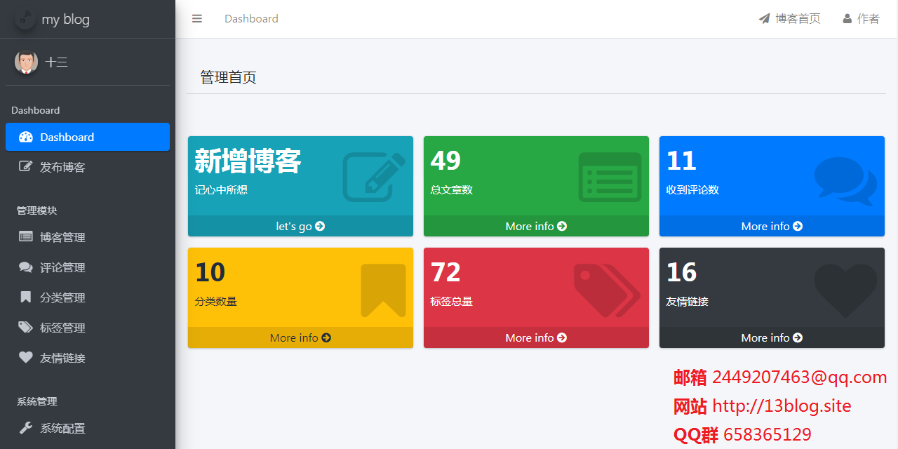

Here are
2,166 public repositories
matching this topic...
about learning Spring Boot via examples. Spring Boot 教程、技术栈示例代码，快速简单上手教程。
🔥 🎉 newbee-mall 项目（新蜂商城）是一套电商系统，包括 newbee-mall 商城系统及 newbee-mall-admin 商城后台管理系统，基于 Spring Boot 2.X 及相关技术栈开发。 前台商城系统包含首页门户、商品分类、新品上线、首页轮播、商品推荐、商品搜索、商品展示、购物车、订单结算、订单流程、个人订单管理、会员中心、帮助中心等模块。 后台管理系统包含数据面板、轮播图管理、商品管理、订单管理、会员管理、分类管理、设置等模块。
该仓库中主要是 Spring Boot 的入门学习教程以及一些常用的 Spring Boot 实战项目教程，包括 Spring Boot 使用的各种示例代码，同时也包括一些实战项目的项目源码和效果展示，实战项目包括基本的 web 开发以及目前大家普遍使用的线上博客项目/企业大型商城系统/前后端分离实践项目等，摆脱各种 hello world 入门案例的束缚，真正的掌握 Spring Boot 开发。
Thymeleaf is a modern server-side Java template engine for both web and standalone environments.

🌴 A simple & beautiful blogging system implemented with spring-boot & thymeleaf & mybatis My Blog 是由 SpringBoot + Mybatis + Thymeleaf 等技术实现的 Java 博客系统，页面美观、功能齐全、部署简单及完善的代码，一定会给使用者无与伦比的体验
一款企业信息化开发基础平台，拟集成OA(办公自动化)、CMS(内容管理系统)等企业系统的通用业务功能 JeePlatform项目是一款以SpringBoot为核心框架，集ORM框架Mybatis，Web层框架SpringMVC和多种开源组件框架而成的一款通用基础平台，代码已经捐赠给开源中国社区
Updated
on 22 Apr
JavaScript
Updated
on 15 Sep 2020
Java
(RuoYi)官方仓库 基于SpringBoot的权限管理系统 易读易懂、界面简洁美观。 核心技术采用Spring、MyBatis、Shiro没有任何其它重度依赖。直接运行即可用
jbone基于Spring Cloud框架开发，旨在为中小企业提供稳定的微服务解决方案，为开发人员提供基础开发骨架，jbone包含微服务中所有常用组件，例如注册中心、服务管理、服务监控、JVM监控、内存分析、调用链跟踪、API网关等等。业务功能包括系统权限的统一管理、单点登录、CMS、电商平台、工作流平台、支付平台等等。
rabbitmq、redis、scheduled、socket、mongodb、Swagger2、spring data jpa、Thymeleaf、freemarker etc. (muti module spring boot project) (with spring boot framework，different bussiness scence with different technology。)
Updated
on 13 Oct 2020
Java
基于SpringBoot+Shiro+Redis+Jwt+Thymeleaf+MyBatis 开发的后台用户、角色、权限、会员管理、RestFul、Token和前台用户登录注册以及前后台用户分离的脚手架，技术交流请加QQ群：805442966
Updated
on 26 Apr
JavaScript
基于Spring Boot实现的一个简易的Java社区
使用SpringBoot与shiro实现基于数据库的细粒度动态权限管理系统实例
Updated
on 1 Jul 2020
Java
一个基于SpringBoot开发的个人博客。集成了：博客前台，后台管理。
Spring Boot 使用总结 和 demo。 如果您觉得本代码对您有所帮助，请点击页面右上方"Star"
Updated
on 23 Jan 2019
Java
基于Spring Boot/Spring Security/thymeleaf的通用后台管理系统
Updated
on 24 Feb 2017
JavaScript
Thymeleaf integration module for Spring
MongoDB File Server is a file server system based on MongoDB. 基于 MongoDB 的文件服务器。
Updated
on 13 May 2019
Java
A Thymeleaf dialect for Apache Shiro tags.
🌹 springboot常用框架整合示例，涉及多种网站监控，数据缓存，网络通信，持久层，权限管理，常用工具等
Spring Boot Enterprise Application Development.《Spring Boot 企业级应用开发实战》
⬆️ 基于springboot+thymeleaf+spring data jpa+druid+bootstrap+layui等技术的JavaWeb电商项目(项目包含前后台,分为前台商城系统及后台管理系统。前台商城系统包含首页门户、商品推荐、商品分类、商品搜索、商品展示、商品详情、购物车、订单流程、用户中心、评论(有些bug,当时做得不够好,下一个项目的评论模块比这个好)、模拟支付等模块。 后台管理系统包含商品管理、订单管理、用户管理等模块。系统介绍及详细功能点、技术点见项目内文档描述)☀️
Updated
on 2 Mar 2019
Java
layui 版本的 My-Blog : A simple & beautiful blogging system implemented with spring-boot & layui & thymeleaf & mybatis My Blog 是由 SpringBoot + Layui + Mybatis + Thymeleaf 等技术实现的 Java 博客系统，页面美观、功能齐全、部署简单及完善的代码，一定会给使用者无与伦比的体验
Updated
on 27 Dec 2020
Java
Improve this page
Add a description, image, and links to the
thymeleaf
topic page so that developers can more easily learn about it.
Curate this topic
Add this topic to your repo
To associate your repository with the
thymeleaf
topic, visit your repo's landing page and select "manage topics."
Learn more
You can’t perform that action at this time.
You signed in with another tab or window. Reload to refresh your session.
You signed out in another tab or window. Reload to refresh your session.